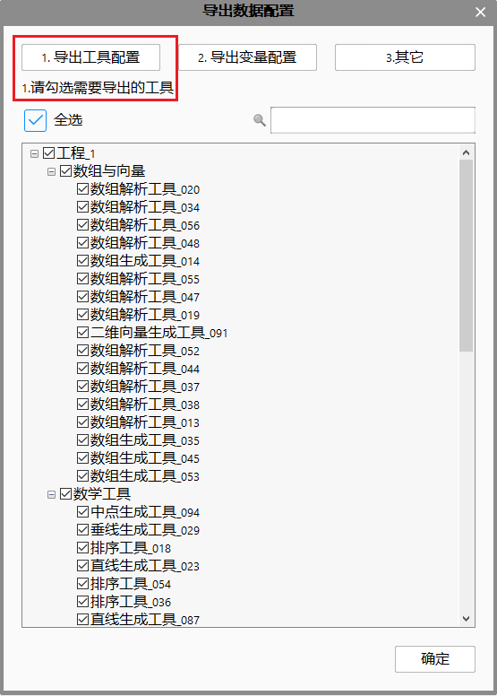

在实际应用项目初期进行批量装机的时候，所有机台都会使用统一的解决方案，但是在设备调试过程中，由于机台的差异性，每个机台的使用数据会不同；其次，随着解决方案的逐渐升级完善，需要将新的解决方案配置到所有机台上，但需要保持每个机台所特有的数据，不必再重新调试，过程如图1所示。因此，增加设备同步功能，可将标准机台上的工程程序逻辑或者数据同步到其它机台上，软件入口如图2所示。
同步程序到目标设备
即导出解决方案中的程序逻辑结构到gvpm文件中。
所谓的程序逻辑结构包括：流程图、参数链、视图、表达式、生产界面布局等等。
同步数据到目标设备
即导出解决方案中的数据到gvpd文件中。
所谓的数据包括：工具参数、变量值、作业名、生产界面日志窗口设置等等，具体如表1中含有D的部分。
从源设备同步程序
从源设备同步数据
工艺变更，工程中增加了新的功能，工程流程图、视图显示、表达式、脚本内容等等发生变化，希望将这些修改同步到其它设备上。 该场景可使用“设备同步->同步程序到目标设备”、“设备同步->从源设备同步程序”。具体步骤如下：
标准机台上，选择文件->设备同步->同步程序到目标设备，如图3
进行导出程序配置
导出工具配置：在导出工程的程序逻辑结构时，可以同步导出工具参数，勾选列表中需要导出的工具即可，如图4
注意
在导出程序配置时，工具列表默认全不勾选。
导出变量配置：在导出工程的程序逻辑结构时，可以同步导出工程中变量的值，勾选列表中需要导出的变量即可，推荐勾选显示全部变量后，使用推荐配置，如图5(b)
注意
- 在导出程序配置时，默认“生产界面不可修改？”项为是时，“是否导出”才勾选，如图5(a)。
- 当未勾选显示全部变量，且变量列表为空时，说明配置正确。若此时列表不为空，需核对变量导出配置。
其它配置：在导出工程的程序逻辑结构时，可以同步导出工程中相机、通信、光源管理中的参数设置，勾选需要导出的参数即可，如图6
注意
在导出程序配置时，默认全不勾选。
目标机台上，选择文件->设备同步->从源设备同步程序，如图7
参数标准化。根据客户要求，需要统一设备的生产参数，需要将某一台机修改的参数同步至其它机台。 该场景可使用“设备同步->同步数据到目标设备”、“设备同步->从源设备同步数据”。具体步骤如下：
标准机台上，选择文件->设备同步->同步数据到目标设备，如图8
进行导出数据配置
导出工具配置：导出工具参数数据，勾选列表中需要导出的工具即可，如图9
注意
在导出数据配置时，工具列表默认全勾选，可手动去掉不需要导出的工具。

导出变量配置：导出工程中变量的值，勾选列表中需要导出的变量即可，推荐勾选显示全部变量后，使用推荐配置，如图10
注意
- 在导出数据配置时，默认“生产界面不可修改？”项为是时，“是否导出”不勾选，如图10。
- 当未勾选显示全部变量，且变量列表为空时，说明配置正确。若此时列表不为空，需核对变量导出配置。
其它配置：同步导出工程中相机、通信、光源管理中的参数设置，勾选需要导出的参数即可，如图11
注意
在导出数据配置时，默认全勾选。
目标机台上，选择文件->设备同步->从源设备同步数据，如图12
导入、导出的文件必须同源，即来自同一个解决方案（复制或另存为），即解决方案ID相同。
新建的解决方案不能直接导入gvpm或gvpd文件，需要先保存。
在目标机台导入变量/相机/通信端口/光源参数时，均是通过名称进行匹配，若名称相同，则认为是同一个变量/相机/通信端口/光源。
在目标机台导入相机参数时，若相机类型不同，则以目标机台的相机类型为准。